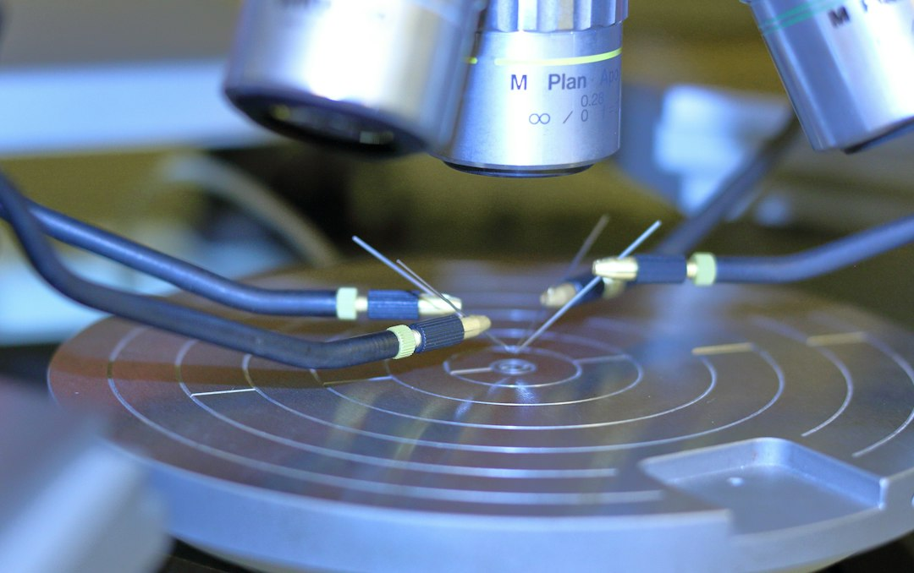

소부장 1700억 지원, 인증 장벽 넘기 전엔 종이 수표

[자료사진] 기사와 무관한 이미지입니다.
산업통상자원부는 2025년 소부장 투자지원 예산을 기존 1,200억 원에서 1,700억 원으로 41.7% 증액하고, 지원 대상 첨단전략산업을 반도체·디스플레이·배터리 등 6개 분야로 확대했다. 투자액의 최대 50%를 현금 보조(grant) 방식으로 지원하며, 접수 기간도 연장했다. 지원 대상은 중소·중견기업으로, 대기업 계열사는 원칙적으로 제외된다.
국내 소부장 기업이 삼성전자·SK하이닉스·LG디스플레이 등 대형 고객사의 양산 라인에 신규 소재·부품을 진입시키기 위한 인증 소요 기간은 통상 18~36개월이다. 이 기간 동안 고객사는 신규 공급사에 NRE(비반복 엔지니어링) 비용을 부담시키며, 인증 탈락 시 비용은 전액 공급사 손실로 귀결된다. 2023년 산업부 실태조사에서 소부장 기업의 43%가 '인증 비용 부담'을 사업 확장의 1순위 장벽으로 꼽았다.
이번 지원 확대에서 인증 비용 직접 보전이나 대형 고객사와의 공동 인증 트랙 신설 내용은 포함되지 않았다. 투자 보조금이 설비·R&D에 집중되는 반면, 실제 매출 전환을 막는 '인증 병목'에 대한 정책 처방은 이번에도 빠졌다는 것이 현장의 평가다.
1,700억 원 규모 보조금은 투입 측면에서는 의미 있는 증액이다. 그러나 소부장 정책의 효과는 '지원금 집행 완료'가 아니라 '고객사 양산 채택'으로 측정해야 한다. 인증 사이클을 단축하거나 인증 비용을 공동 부담하는 구조 없이는, 보조금은 설비 과잉투자와 재고 압박으로 귀결될 위험이 있다.
일본이 소부장 기업 육성에서 성과를 낸 핵심은 보조금이 아니라 '세트 업체-소재 업체 공동 개발(JDA) 계약 의무화'와 장기 공급 확약이었다. 한국 정책은 지원금 구조에서 20년째 같은 설계를 반복하고 있다. 이번 6개 분야 확대에서 수요기업 참여 의무 조항이 빠진 것은 구조적 결함이다.
장비보다 소재 쪽에서 인증 경험이 이미 있는 중견기업이 이번 지원의 실질적 수혜자다. 반도체 CMP 슬러리 분야의 솔브레인·동진쎄미켐, 포토레지스트 분야의 동우화인켐처럼 이미 고객사 승인 풀에 들어간 업체는 추가 설비 투자 시 보조금을 레버리지로 쓸 수 있다.
산업은행·기업은행이 소부장 전용 정책금융 연계를 확대하는 흐름이어서, 1,700억 보조금 + 정책금융 매칭을 통한 실질 자금 조달 규모는 3,000억 원 이상으로 확대될 수 있다. 금융 접근성이 낮은 매출 500억 원 미만 소형 소부장사가 가장 큰 혜택을 볼 구간이다.
신규 진입 소부장 스타트업은 이번 지원의 사각지대다. 설립 3년 미만 기업은 고객사 인증 이력 자체가 없어 대형 팹 인증 트랙 진입이 구조적으로 차단돼 있다. 보조금을 받아도 첫 고객사 확보까지 자금이 소진될 가능성이 높다.
해외 소재 의존도가 90% 이상인 초고순도 공정가스·희귀금속 분야는 이번 지원 6개 분야에 명시적으로 포함되지 않아, 정책 우선순위에서 또다시 밀릴 수 있다. 갈륨·게르마늄 대체 소재 개발 기업은 별도 트랙이 없으면 일반 소부장 보조금 경쟁에서 우선순위를 확보하기 어렵다.
지원 신청을 준비 중인 소부장 기업은 단순 설비투자 계획서 대신 '고객사 예비인증(QI) 일정표'를 함께 첨부해야 한다. 인증 로드맵이 없는 투자는 심사 과정에서 실현 가능성 점수가 낮게 평가되고, 집행 후에도 성과지표 미달로 환수 리스크가 생긴다.
구매담당자 관점에서는 이번 지원을 받은 공급사 후보를 발굴할 때 '지원금 수령 여부'보다 '인증 단계 도달 여부'를 선별 기준으로 써야 한다. QI(예비인증) 완료~QA(양산인증) 진행 중인 업체가 실제 납기 리스크가 낮은 공급 후보다.
실제 조달 현장에서는 — 보조금 수령 후 설비를 증설했지만 고객사 인증이 지연돼 18개월간 가동률 20% 미만으로 운영한 국내 소재 기업 사례를 복수로 목격했다. 지원금이 '설비 과잉'을 만들지 않으려면, 기업은 반드시 수요처 인증 일정과 설비 가동 시점을 역산해 투자 타이밍을 맞춰야 한다.
이 포스팅은 쿠팡 파트너스 활동의 일환으로 수수료를 제공받습니다.